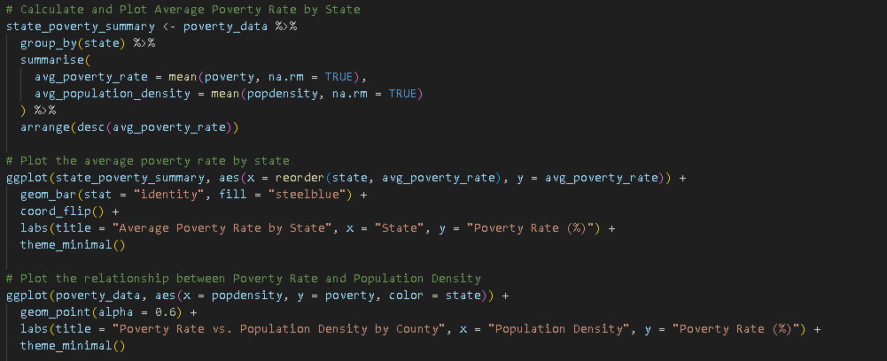
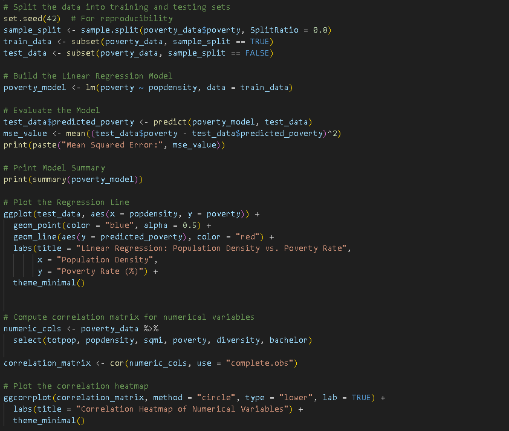

AUGUST 2024



Poverty Rate Analysis: U.S. County-Level Insights
Introduction
This analysis focuses on understanding poverty rates across U.S. counties and their relationship with population density, education levels, and other key demographic factors. The goal is to explore the geographic and socioeconomic trends that explain variations in poverty rates and to build a predictive model to better understand these factors.
Data Collection
The analysis uses a dataset that contains county-level statistics across the U.S. The key variables include:
- Poverty Rate: The percentage of people living below the poverty line in each county.
- Population Density: The number of people per square mile in each county.
- Total Population: The total population of each county.
- Diversity Index: A measure of racial and ethnic diversity within a county.
- Educational Attainment: The percentage of people holding a bachelor’s degree or higher.
- State: The U.S. state in which each county is located.
Data Preprocessing
Several preprocessing steps were performed to clean and process the data:
- Date Formatting: Date columns were converted to proper date formats to ensure consistency in time-series analysis.
- Missing Data: Missing or null values in key variables, such as poverty rate and population density, were handled using appropriate methods to avoid introducing bias into the analysis.
- Feature Extraction: Key features such as total population, population density, and educational attainment were retained for further analysis. These features were identified as important predictors of poverty rates.
Exploratory Data Analysis (EDA)
Average Poverty Rate by State
The first step in the analysis was to calculate the average poverty rate by state, providing a broad view of geographic poverty distribution. By grouping the data by state and averaging the poverty rates, the analysis highlights which states are most affected by poverty.
The bar chart above shows that poverty rates vary significantly between states. This visualization provided key insights into regional disparities in poverty levels.
Poverty Rate vs. Population Density
To investigate the relationship between poverty rate and population density, a scatter plot was created, where each point represents a county. This analysis helps to identify whether population density has a significant effect on poverty rates, with the assumption that more densely populated areas may have different poverty trends compared to rural counties.
Model Development: Predicting Poverty Rates
Linear Regression Model
A linear regression model was built to predict poverty rates based on population density. The dataset was split into training (80%) and testing (20%) sets to ensure the model could generalize well to unseen data.
poverty_model <- lm(poverty ~ popdensity, data = train_data)
Model Evaluation
The performance of the model was evaluated using the Mean Squared Error (MSE) to measure the accuracy of the predictions. A regression line was plotted on a scatter plot of population density vs. poverty rate, with actual and predicted values compared.
Correlation Analysis
To further explore relationships between multiple variables, a correlation matrix was computed for numerical columns, including population density, total population, poverty rate, and educational attainment. The heatmap below shows the strength of correlations between these variables:
